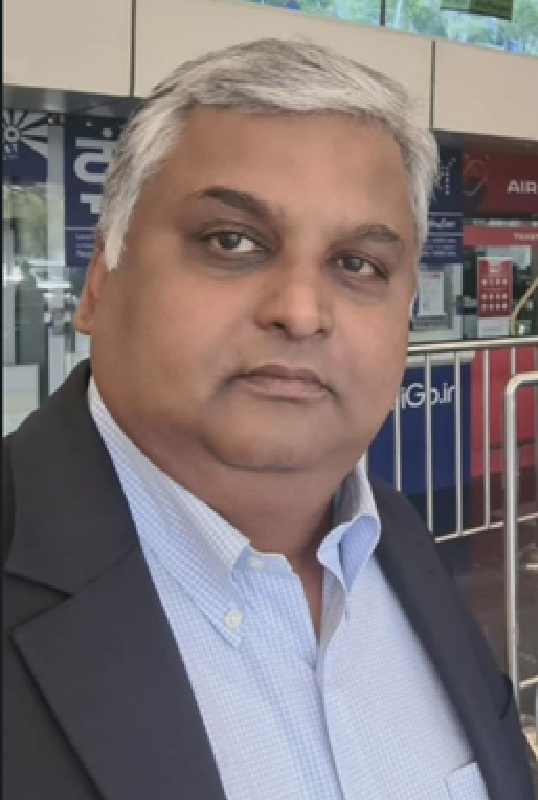

Purpose
Make technical conversations useful.
Connect the question being asked with the engineering decisions that follow.
Company
Zepto Logic Technologies Private Limited · Coimbatore, India
Who we are
Zepto Logic Technologies works in semiconductor engineering, digital hardware and applied research. We welcome discussions with organisations seeking consultancy, development support or collaboration around a defined requirement.
Our approach is to understand the application and working context before proposing how an engagement might be structured.
Purpose
Connect the question being asked with the engineering decisions that follow.
Approach
Discuss scope, constraints and expectations with the people responsible for the programme.
Working principles
Respect confidentiality, communicate precisely and agree responsibilities before work begins.

Leadership
Co-Founder, Managing Director & Chief Executive Officer
Suresh’s leadership experience spans technology services, financial infrastructure, enterprise transformation and corporate strategy.
His career includes responsibilities across India, Europe and the Middle East, with organisations including Tata Consultancy Services, IBM, CAMS/SSPL, Adrenalin eSystems and the Sakthi Group.
He is a Harvard Business School Advanced Management Program alumnus and holds a B.E. in Computer Science & Engineering from Coimbatore Institute of Technology.
Incorporated
Engineering centre
Corporate identity
A conversation is a good place to start